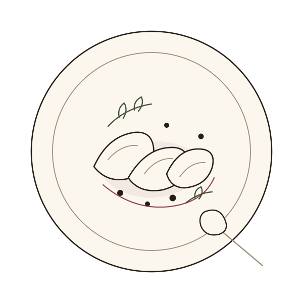

Written each afternoon
The menu
Short, because the kitchen is small and the fish comes once a day. Half of it changes every week and the rest has been there since we opened.
Prices are shown in pounds and are illustrative sample values invented for this template. They are not a price list and no figure on this page refers to anything a real kitchen charges.
Everything is cooked to order. If you tell us about an allergy when you sit down, the kitchen will tell you honestly what it can and cannot do.

Show
- veg, made without meat or fish
- vegan, made without animal products
- 125ml is the glass pour
Small plates
To begin with, or four of them instead of a plate.
-
Grilled bread, cultured butterveg4.50
Sourdough from the bakery on Mill Row, butter churned here on Mondays and salted at the last minute.
-
Olives, fennel and orange peelvegan5.00
Warmed in oil with a strip of peel until the whole bar can smell the pan.
-
Anchovies, butter, sea salt7.50
Six of them, a cold slab of butter and bread to put them on. Nothing is cooked.
-
Fried artichokes, aioliveg8.00
Trimmed in the morning, held in lemon water, fried twice and salted hard.
-
Whipped cod's roe, radishes8.50
Smoked roe beaten with potato and lemon until it is pale, with radishes to dig it out.
-
Pickled mussels on toast9.00
Cooked in cider, dressed with their own liquor, eaten with your fingers.
-
Chicory, walnut and blue cheeseveg9.50
Bitter leaves, a sharp dressing and enough cheese to argue with both.
-
Potted beef, cornichons10.00
Slow shin under a lid of butter, sharpened with mustard and left in the cold room for a week.
Plates
One each, or two in the middle for three people who like sharing.
-
Squash, lentils, burnt onionvegan18.50
Roasted until it collapses, on lentils cooked in the same tray, with onion taken further than most kitchens dare.
-
Gnocchi, greens, aged cheeseveg19.00
Rolled at four in the afternoon, cooked at seven, with whatever green is best that week.
-
Cured trout, cucumber, dill21.00
Cured for two days with salt and sugar, sliced to order, dressed with cucumber and its own oil.
-
Whole plaice, brown butter, capers24.00
One fish, one pan, brown butter and a spoon of capers. It takes twenty minutes and it is worth the wait.
-
Hogget shoulder, beans, salsa verde26.00
Cooked overnight, pulled into the beans, cut through with a green sauce made in the afternoon.
-
Skirt steak, bone marrow, watercress27.00
Hung five weeks, cooked over a high flame, rested longer than it was cooked.
Sides
Not strictly necessary. Order them anyway.
-
Green salad, shallot dressingvegan5.50
Three leaves, a sharp dressing, made in the bowl it comes in.
-
Potatoes in dripping6.00
Boiled, crushed, roasted hard in beef dripping and salted twice.
-
Buttered greensveg6.50
Whatever came from the grower on Thursday, with more butter than you would use at home.
Desserts
Three that never change and one that does.
-
Burnt custardveg8.00
Set in the morning, burnt to order, eaten with a teaspoon while it is still warm on top.
-
Pear poached in red winevegan8.50
Poached in the end of a bottle with a strip of peel and a bay leaf.
-
Chocolate and olive oilveg9.00
Dark, loose, salted, and finished at the table with a spoon of oil.
-
Cheese from the counter, oatcakes11.00
Two pieces cut to order, kept at room temperature since lunchtime.
Wine by the glass
A short version of the list. The whole of it, by the glass and the bottle, is on the wine page.
Glass pours are 125ml. Prices below are illustrative sample values.
-
Fino en rama, Jerez7.00
Straight from the barrel, unfiltered, cold enough to hurt your teeth.
-
Xarel-lo, Penedes 20228.50
Chalky and dry, the glass to start with while you read the rest.
-
Aligote, Burgundy 20229.00
Lean, high and a little salty. It goes with the cod's roe.
-
Gamay, Loire 20239.50
Served cold, drunk quickly, the house red in all but name.
-
Riesling, Mosel 202110.00
Off dry, low in alcohol, and the answer when the table cannot agree.
-
Trousseau, Jura 202111.00
Pale, savoury and stubborn. Ask for it with the hogget.
This page is set to print: the browser's print command gives a clean copy with the navigation and the filters left off.